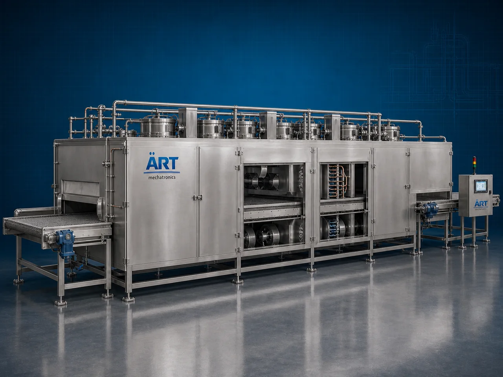

Freezer Machine (Industrial Individual Quick Freezing System)
An IQF Freezer Machine, also known as an Individual Quick Freezing Machine, IQF System, Fluidized Bed Freezer, or Industrial Quick Freezing System, is an advanced industrial freezing solution designed for ultra-fast individual freezing, product separation, texture preservation, moisture retention, and continuous frozen food processing operations across fruit processing, vegetable processing, dairy, bakery, snacks, ready-to-eat foods, nutraceuticals, and industrial food manufacturing industries.

About the Iqf Freezer
IQF freezing systems are widely used for:
- Individual fruit freezing operations
- Vegetable quick freezing
- Frozen snack processing
- Dairy product freezing
- Ready-to-eat meal freezing
- Bakery product preservation
- Product separation freezing systems
- Cold chain processing operations
The machine improves:
- Product shelf life
- Texture and taste retention
- Product separation quality
- Nutritional preservation
- Moisture retention
- Product appearance consistency
- Industrial freezing productivity
Industrial IQF freezer machines use:
- High-velocity low-temperature airflow systems
- Fluidized bed freezing technology
- Precision refrigeration systems
- PLC and HMI automation controls
- Stainless steel hygienic freezing chambers
to freeze products individually and rapidly while preventing clumping and preserving shape, taste, color, and nutritional value with superior efficiency and high production consistency.
IQF freezer machines are widely used in industries such as:
Frozen food industries Fruit processing industries Vegetable industries Snack manufacturing industries Bakery industries Dairy industries Nutraceutical industries Food processing industries
where individual product freezing, premium preservation, and reliable cold chain management are essential.
The machine is highly suitable for:
- Frozen fruit production
- Vegetable quick freezing
- Snack and bakery freezing operations
- Ready-to-eat food preservation
- Nutraceutical product freezing
- Industrial frozen food automation systems
ART Mechatronics offers high-performance IQF freezer machines, engineered for continuous industrial operation, hygienic freezing performance, energy-efficient refrigeration, and reliable long-term industrial productivity.
Working Principle of Iqf Freezer Machine
- 1. Product Feeding & Pre-Cooling Process Products are uniformly fed into freezing chamber through conveyorized feeding systems.
- 2. Individual Quick Freezing Process Machine circulates ultra-cold high-velocity air across products using fluidized bed and refrigeration systems to rapidly freeze products individually.
Advanced IQF technology ensures products remain free-flowing and non-sticky after freezing.
- 3. Freezing & Product Preservation Operation Machine handles freezing of: ✔ Fruits ✔ Vegetables ✔ Frozen snacks ✔ Dairy products ✔ Bakery products ✔ Ready-to-eat foods ✔ Nutraceutical products ✔ Industrial food products
accurately and continuously.
- 4. Product Separation & Moisture Retention Process Machine performs: Individual quick freezing Rapid freezing Product separation Moisture retention Texture preservation Cold stabilization
for efficient industrial frozen food and preservation operations.
- 5. Intelligent Automation & Energy Management Integration Optional systems include: Digital temperature monitoring systems Automatic belt cleaning systems Remote monitoring systems Energy-saving refrigeration controls Data logging systems
- 6. Finished Product Discharge & Cold Storage Transfer Processed frozen products discharged automatically for: Packaging operations Cold storage systems Retail distribution Export shipment handling Frozen logistics operations
Types of Iqf Freezer Machines
- 1. Fluidized Bed IQF Freezer Designed for: ✔ Fruits, vegetables, and small particle freezing applications
- 2. Tunnel IQF Freezer Machine Suitable for: ✔ Continuous industrial frozen food processing systems
- 3. Spiral IQF Freezer System Uses: ✔ High-capacity industrial freezing operations
- 4. Belt Type IQF Freezer Machine Designed for: ✔ Conveyorized frozen food production systems
- 5. Cryogenic IQF Freezer Machine Suitable for: ✔ Ultra-low temperature freezing applications
- 6. Fully Automatic Industrial IQF Freezing System Designed for: ✔ Complete frozen food automation lines
Industries Using Iqf Freezer Machines
❄️ Frozen Food Industry Frozen vegetables, snacks, ready meals, and food preservation systems. 🍓 Fruit Processing Industry Frozen berries, fruits, and premium preservation operations. 🥦 Vegetable Processing Industry IQF vegetables and cold chain processing systems. 🍞 Bakery Industry Frozen dough, pastries, and bakery preservation systems. 🥛 Dairy Industry Frozen dairy ingredients and temperature-controlled processing systems. 🛒 FMCG Food Industry Premium frozen foods and packaged ready-to-eat products.
Features & Advantages
- High-speed individual quick freezing operation
- Superior product texture and appearance preservation
- Hygienic stainless steel industrial construction
- PLC and automation control systems
- Prevents product clumping and sticking
- Preserves nutritional value and moisture content
- Supports multiple food and nutraceutical products
- Reliable long-term industrial performance
- Smooth integration with industrial frozen food lines
Technical Highlights
Machine Type: IQF freezer machine Industrial quick freezing system Fluidized bed freezer Material Compatibility: Fruits Vegetables Frozen snacks Bakery products Dairy products Ready-to-eat foods Nutraceutical products Integration: High-velocity airflow systems Fluidized bed systems Industrial refrigeration systems Temperature monitoring systems Features: PLC control system Touchscreen HMI Stainless steel insulated chambers Automatic cleaning systems Data logging systems Applications: Individual quick freezing Rapid freezing Product preservation Cold stabilization Frozen storage Cold chain management Automation: Semi-automatic Fully automatic industrial systems
Turnkey Iqf Freezing Solutions
ART Mechatronics offers: Complete IQF freezing systems Automatic frozen food processing solutions Industrial cold chain management systems Refrigeration and storage integration systems Installation & commissioning After-sales service & AMC
Why Choose Art Mechatronics
Expertise in industrial refrigeration and frozen food automation systems Customized IQF freezing solutions for multiple industries High-performance and energy-efficient freezing technology Advanced PLC and automation systems Proven industrial cold chain performance across sectors
Applications
Frozen Food Manufacturing Plants Fruit Processing Facilities Vegetable Processing Units Bakery Industries Dairy Processing Plants Industrial Food Processing Industries
Related Process Equipment machines
Get pricing & specs for the Iqf Freezer
Share the product, target capacity, current process and plant location. These details help our engineers discuss the right machine or line configuration.
One partner, from design to start-up
ART Mechatronics designs, manufactures, installs and commissions your Iqf Freezer solution with regional presence in India, UAE and Thailand.